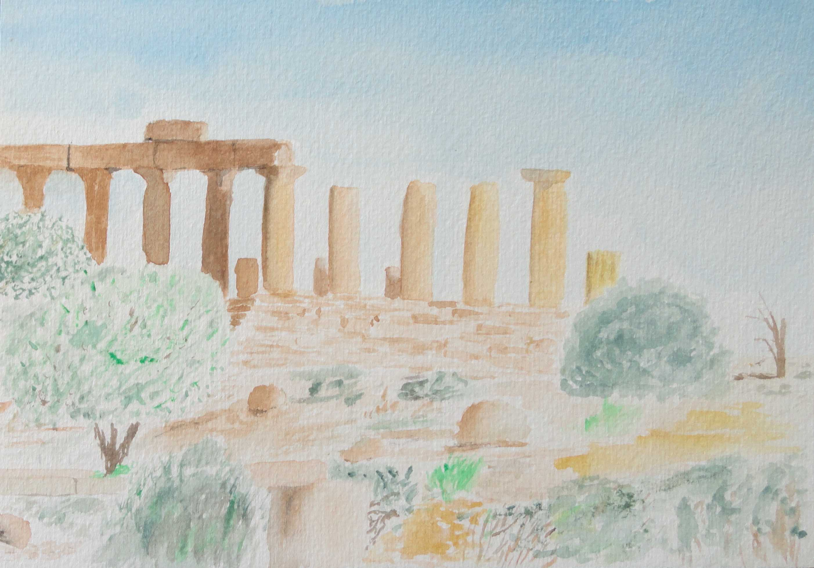
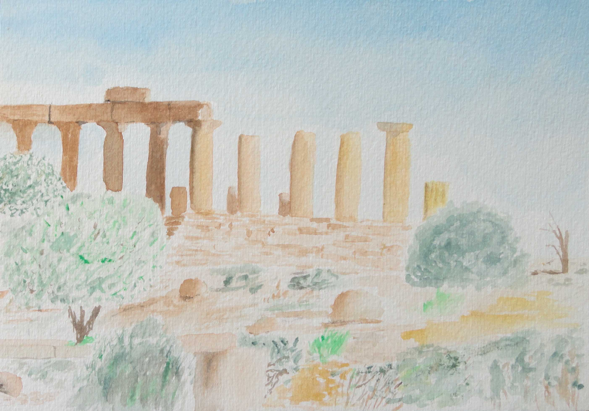
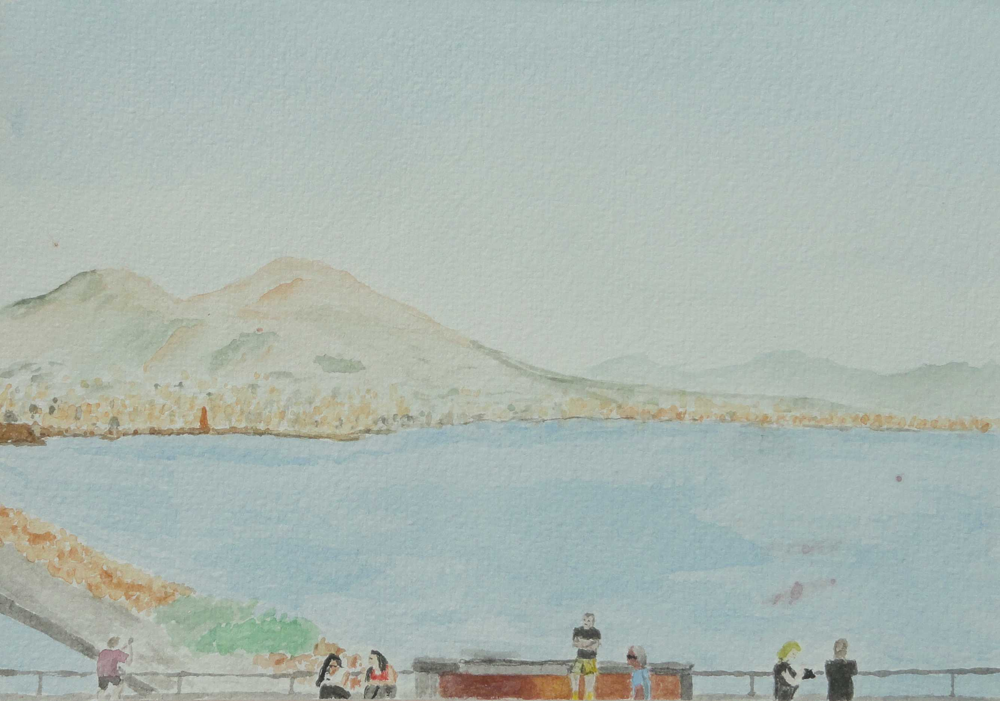
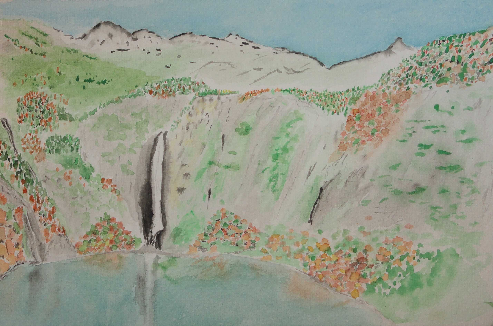
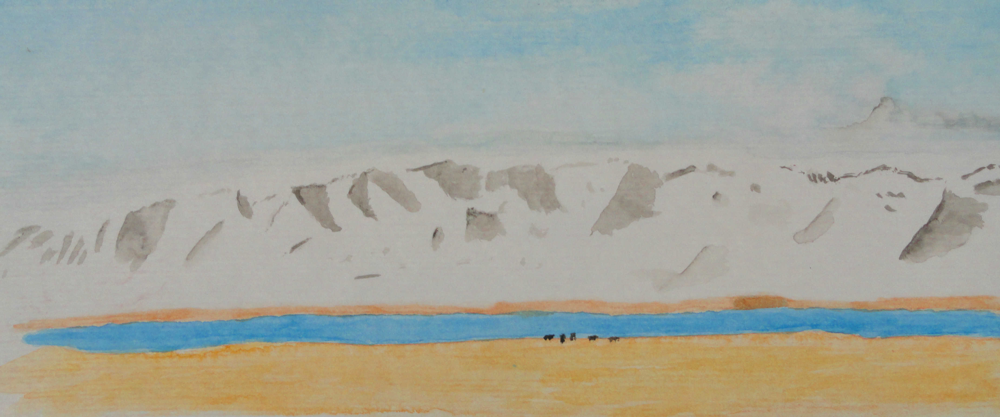
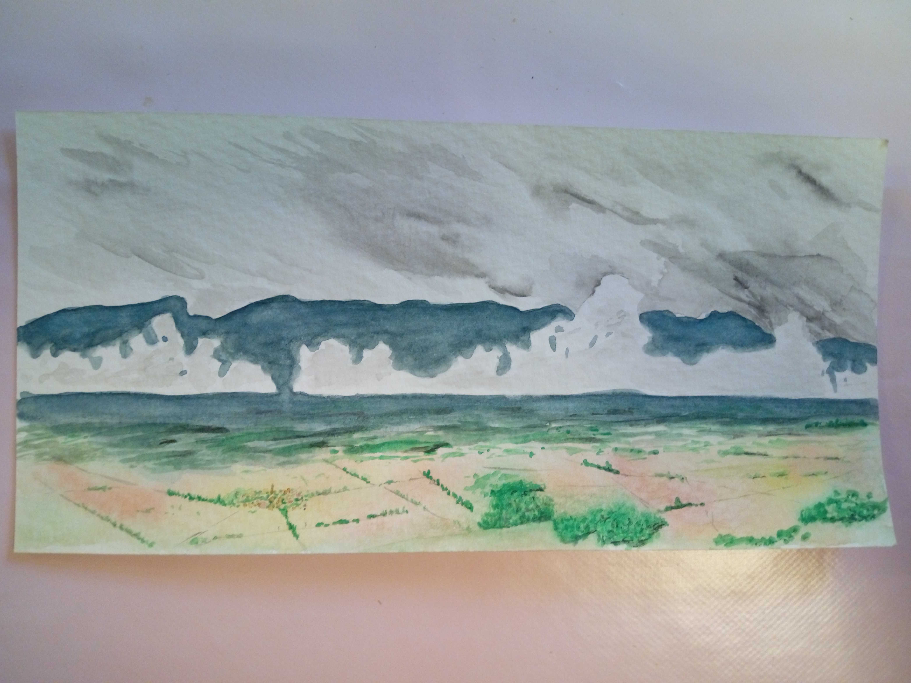

The iconic Eliean Donan Castle, in Scotland. the days are long in the summer which helps you to find some slots where the sunlight gives you wonderfull landscapes. It was not my case this day, but still, not bad :)
 

Temples in the town of Agrigente, Sicily. I always wonder than currrently, no architect builds something and thinks, "Yeah, this will last a thousand of years!"

The Vesuvio volcano, seen from the port of Naples.

The Oo lake in the Pyrenees mountains, France. Very accessible, and lovely quiet with it's autumn colors.

Song-kol lake, Kyrgystan. It is a vast area for summer pastured. Waking up from our yurt at sunrise, we chanced to see a recent fall of snow in the 4000m surrounding peasks which quickly melted within hours. I rendered the particular light as best as I could.

And the last one but not least is my home town, around Carcassonne, France.